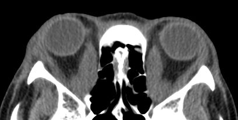
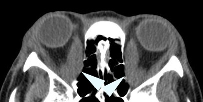
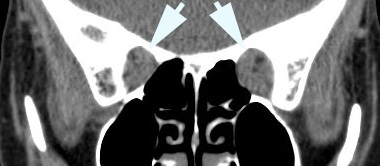
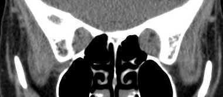

☰
Optic Nerve And Optic Chiasm Disorders
Optic Neuropathy Of Graves Disease

What is it?
Slowly progressive monocular or binocular visual loss caused by compression of optic nerve by swollen extraocular muscles
Patient may be euthyroid, hyperthyroid, or hypothyroid
Treatment aimed at reducing compression of optic nerves
Surgical orbital wall decompression may halt or reverse vision loss
Corticosteroids provide short-term benefit at best, but surgical orbital wall removal is definitive
Orbital radiation may be effective in non-candidates for orbital decompression
What does it look like?
Core features
Slowly worsening visual acuity and visual field
Nerve fiber bundle defects
Soft tissue abnormalities of Graves disease
Reduced eye movements
Tip:
degree of reduced eye movements is most associated with optic neuropathy
Resistance to retropulsion of eye
Lid retraction and lid lag
Congested lids and conjunctiva
Optic discs appear normal, elevated, or pale
Current or past hyperthyroidism or hypothyroidism, but current thyroid function often normal
Thyroid antibodies often present


Orbital imaging (CT or MRI) shows
Swollen extraocular muscles on axial view
Lack of clearance of optic nerve at orbital apex on coronal view
What else looks like it?
Optic neuritis
Infiltrative (neoplastic) optic neuropathy
Compressive optic neuropathy
Tip:
congestive features and ductional deficits of Graves disease give this diagnosis away!
What should you do?

Recommend surgical orbital (especially medial) wall decompression if
Visual dysfunction is attributable to optic neuropathy
No other cause for optic neuropathy
Imaging shows apical orbital compression of optic nerves by swollen extraocular muscles
Trap:
no form of treatment—including surgical decompression—will benefit this optic neuropathy unless imaging shows orbital apical compression
Prescribe systemic or intraorbital corticosteroid treatment for interim benefit
Prescribe orbital radiation if patient cannot undergo surgery or if surgery is ineffective
What will happen?
Visual recovery depends on degree of pre-existing visual dysfunction
Orbital wall decompression may provide stabilization or improvement in visual function, but only if wall removal relieves apical compression
Trap:
orbital wall decompression may create or worsen diplopia
Optic Nerve And Chiasm Disorders
Drusen Optic Neuropathy
Colobomatous Optic Neuropathy
Optic Pit Neuropathy
Morning Glory Optic Neuropathy
Hypoplastic Optic Neuropathy
Typical Optic Neuritis
Atypical Optic Neuritis
Papillitis (Neuroretinitis)
Non-arteritic Ischemic Optic Neuropathy
Arteritic Ischemic Optic Neuropathy
Posterior Ischemic Optic Neuropathy
Hypotensive Ischemic Optic Neuropathy
Radiation-induced Optic Neuropathy
Diabetic Papillopathy
Hypertensive Optic Disc Edema
Papilledema
Idiopathic Intracranial Hypertension (Pseudotumor Cerebri)
Compressive Optic Neuropathy: Overview
Optic Neuropathy of Graves Disease
Optic Nerve Sheath Meningioma
Sphenoid Meningioma
Craniopharyngioma
Pituitary Adenoma
Pilocytic Astrocytoma (Optic Glioma)
Carotid Aneurysm
Suprasellar Germinoma
Infiltrative (Neoplastic) Optic Neuropathy
Paraneoplastic Optic Neuropathy
Traumatic Optic Neuropathy
Toxic Optic Neuropathy
Nutritional Deficiency Optic Neuropathy
Dominantly-Inherited Optic Neuropathy
Leber Hereditary Optic Neuropathy
Primary Open Angle Glaucoma